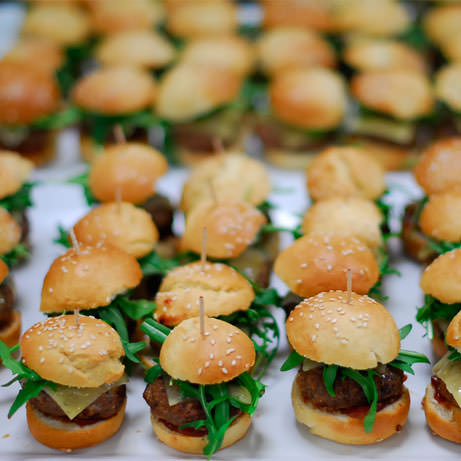
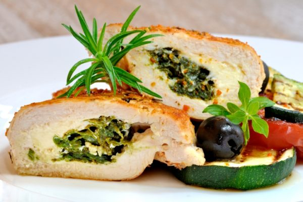
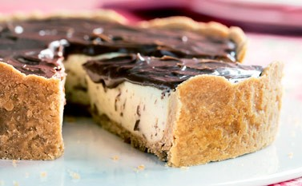
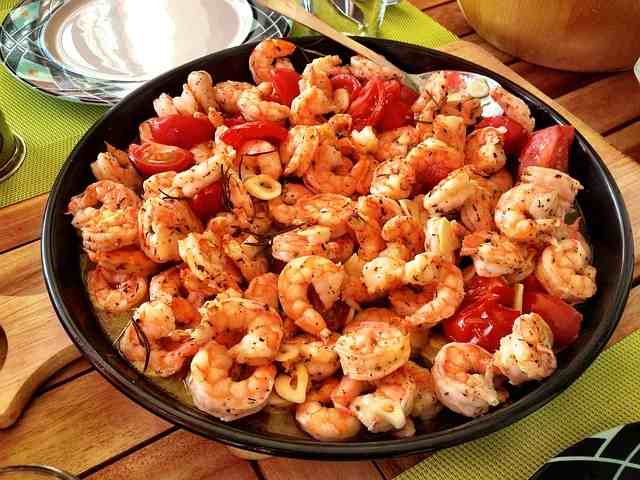
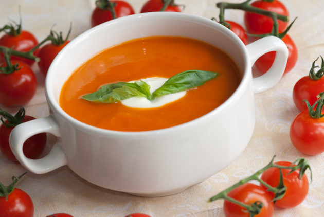
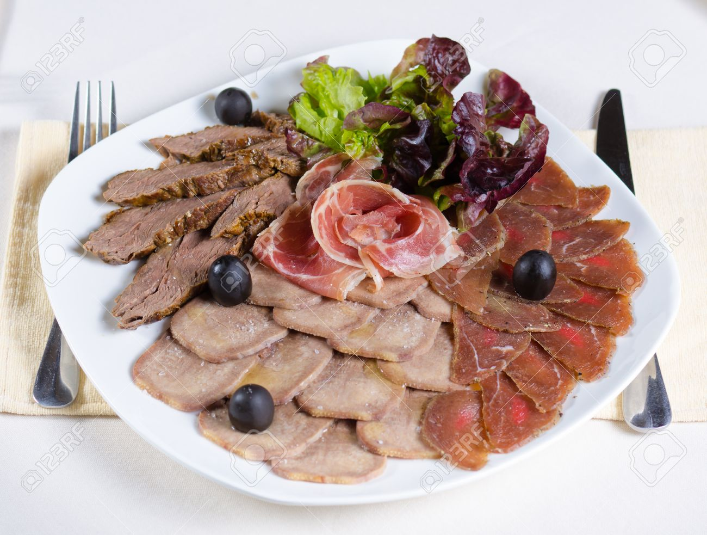
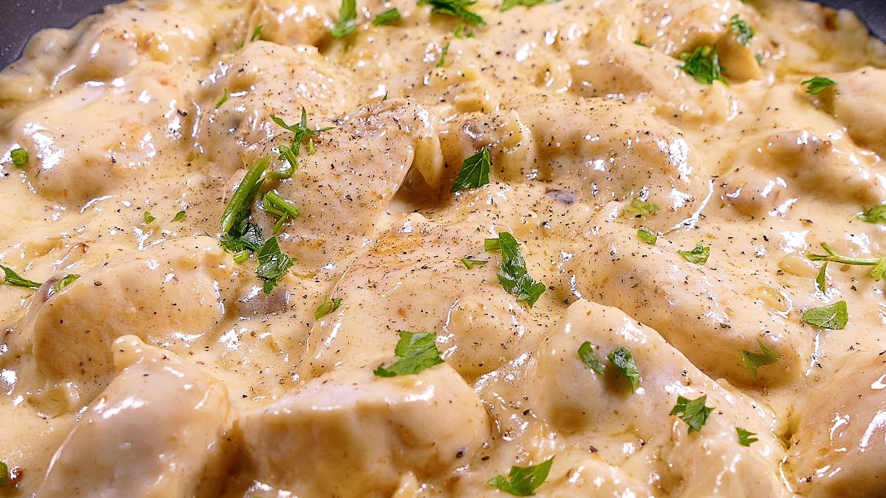
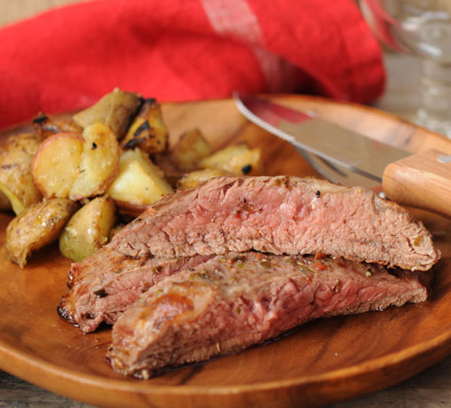

Gourmet Hoy
Donde el buen sabor y el conocimiento por la cocina se junta
FAVORITOS:






PECHUGAS DE POLLO EN SALSA DE QUESO
10 de Diciembre 2017
Recetas faciles de cocina con pollo. Cenas y Comidas rapidas y ricas: Como hacer pollo en crema de queso. Algo delicioso de hacer. La salsa de queso es muy fácil de hacer y siempre queda espectacular. Si sobra puedes mezclarla con alguna pasta. Una sencilla y deliciosa comida rapida y facil de hacer en casa que seguro triunfa en fiestas y para niños. ¡Que no te falten ideas para preparar platos salados rapidos para almuerzos y cenas!
Publicar
Grabriela Marquez
Una receta facil rapida, y que es muy facil de preparar.
Rosa Argañaraz
Muy facil de preparar y que lleva ingredientes que gusta a la mayoria de la gente.
Pablo Velasquez
Una buena receta que se puede hacer con pocos ingredientes.
PALANCA A LA PARRILLA
2 de Noviembre 2017
Una hora antes de preparar la carne, mezclar todos los ingredientes para aliño y adobar la carne por todos lados. Prender la parrilla. Aliñar la carne con sal de mar y cocinar por ambos lados La carne se demora dependiendo de su grosor: 20 minutos cada lado para palancas gruesas (5 a 6 cm); 15 minutos cada lado para intermedias (4 cm) y 10 minutos para delgadas (menos de 4 cm). No debe asarse en exceso ya que la carne quedará muy dura. Una vez lista, sacar de la parrilla y dejar reposar en la tabla por unos 3 a 5 minutos antes de cortar.
Publicar